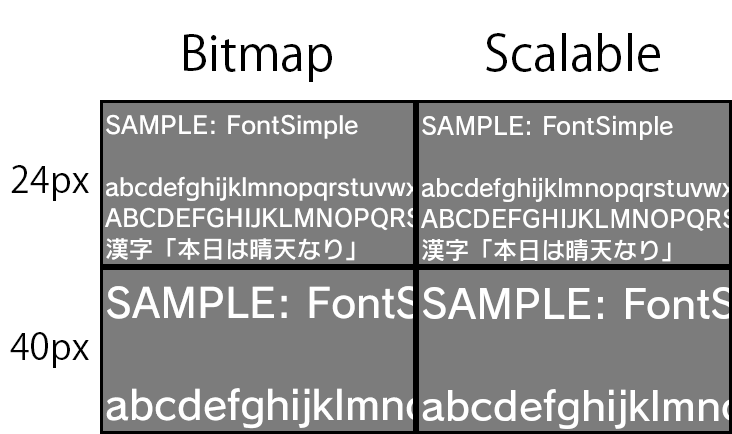

お使いのブラウザは JavaScript が使用できないため、本ドキュメントの一部機能が無効になっています。
JavaScript が無効の環境では目次を使用することができません。JavaScriptの実行が許可された状態で閲覧してください。
質問
同じフォントの、ビットマップフォント描画とスケーラブルフォント描画で表示結果が微妙に異なってしまいます。
回答
カーニング情報の扱いに差異があり、フォントや描画サイズによっては微妙に文字列ピクセルサイズが異なってしまいます。
下図は、フォントサイズを 24px と 40px に設定し、ビットマップフォントとスケーラブルフォントを描画した結果です。アンチエイリアスの影響で 1px 程度の誤差が生じています。
